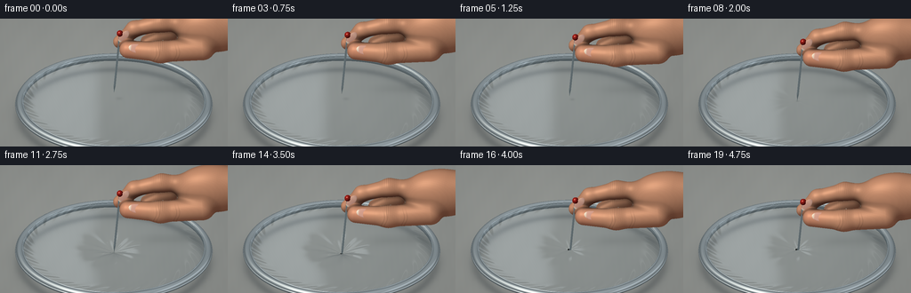
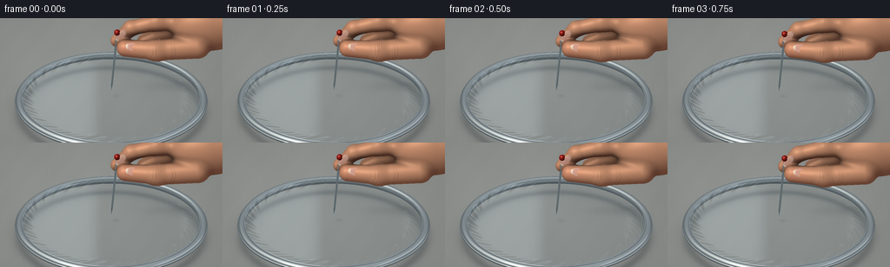
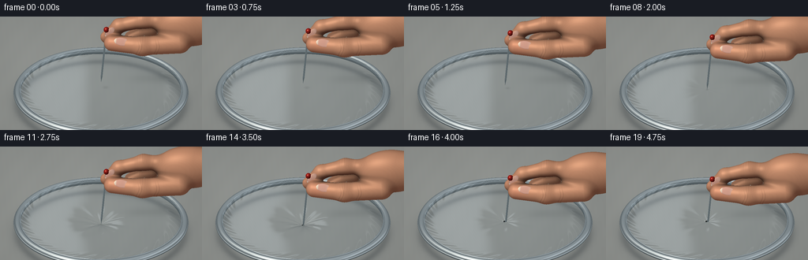
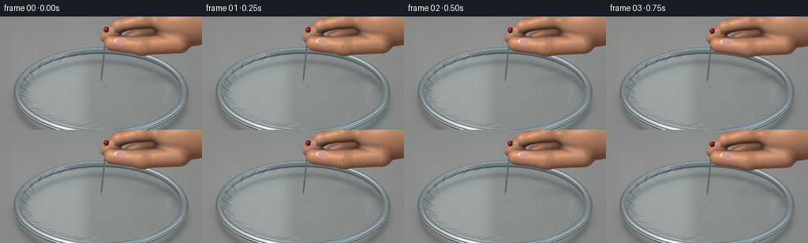

CODING AGENTS AS PIXEL WORLD MODELS
traex/GPT-6.1-Sol · mechanics_0032
点击播放 · 原生 RGB 像素
逐轮保存的候选
回放视频、检查图与代码变化。
每份候选均可单独播放。实际图片检查记录在下方工具轨迹中。
候选 01播放与检查图
点击播放 · 原生 RGB 像素


展开代码变化
--- 上一保存版本
+++ 本次保存版本
@@ -0,0 +1,426 @@
+"""Procedural macro cinematography: a steel pin punctures taut clear film.
+All geometry, shading and motion are generated locally from mathematical forms.
+"""
+from pathlib import Path
+import json, time
+import numpy as np
+from PIL import Image
+import artifact_io
+
+ROOT = Path(__file__).resolve().parent
+SPEC = json.loads((ROOT / 'task_spec.json').read_text())
+W, H = SPEC['width'], SPEC['height']
+SS = 3
+WW, HH = W*SS, H*SS
+SCALE = 33.5*SS
+UP = np.array([0., .496, .8683]); UP /= np.linalg.norm(UP)
+D = np.array([0., UP[2], -UP[1]])
+RIGHT = np.array([1., 0., 0.])
+TARGET = np.array([0.,0.,.55])
+LIGHT = np.array([-.48,-.40,.78]); LIGHT /= np.linalg.norm(LIGHT)
+VIEW = -D
+HALF = (LIGHT + VIEW); HALF /= np.linalg.norm(HALF)
+
+def origins(h=HH, top=0):
+ xx, yy = np.meshgrid((np.arange(WW)+.5-WW/2)/SCALE,
+ -(np.arange(h)+.5-top-HH*.54)/SCALE)
+ return TARGET + xx[...,None]*RIGHT + yy[...,None]*UP - D*14
+
+def normalize(v):
+ return v / np.maximum(1e-12,np.linalg.norm(v,axis=-1,keepdims=True))
+
+def noise3(p):
+ x,y,z = p[...,0],p[...,1],p[...,2]
+ return (np.sin(x*72+y*46+z*35)*np.sin(x*37-y*93+z*53)*.48
+ + np.sin(x*183+y*114-z*129)*.22 + np.sin(x*313-y*224+z*168)*.11)
+
+def environment(r):
+ # A large studio window, a narrow side strip, and a warm workbench.
+ up = np.clip(r[...,2]*.5+.5,0,1)
+ rgb = np.array([53,59,60])[None,:] + up[...,None]*np.array([101,105,108])
+ wide = np.exp(-((r[...,0]+.50)/.36)**4 - ((r[...,1]+.10)/.78)**4 - ((r[...,2]-.72)/.50)**4)
+ side = np.exp(-((r[...,0]-.81)/.15)**2 - ((r[...,2]-.42)/.47)**2)
+ rgb += wide[...,None]*np.array([102,98,88]) + side[...,None]*np.array([63,66,69])
+ return rgb
+
+def metal(p,n, kind='steel'):
+ r = D - 2*np.sum(n*D,axis=-1)[...,None]*n
+ e = environment(r)
+ facing = np.clip(np.sum(n*VIEW,axis=-1),0,1)
+ spec = np.maximum(0,np.sum(n*HALF,axis=-1))**105
+ if kind == 'rim':
+ brushing = .985 + .016*np.sin(np.arctan2(p[...,1],p[...,0])*700 + p[...,2]*170)
+ c = e*.84 + np.array([23,26,28]) + spec[...,None]*100
+ return c*brushing[...,None]
+ return e*.96 + np.array([13,17,19]) + spec[...,None]*125 + (1-facing)[...,None]*17
+
+def torus_intersect(O, R, radius, zc):
+ # Sphere tracing of an exact torus distance function, restricted to its slab.
+ t = (zc+radius+.002-O[...,2])/D[2]
+ tmax = (zc-radius-.002-O[...,2])/D[2]
+ x = O + t[...,None]*D
+ valid = (np.abs(x[...,0]) < R+radius+.05) & (np.abs(x[...,1]) < R+radius+1.)
+ active = np.flatnonzero(valid.ravel())
+ of = O.reshape(-1,3); tt=t.ravel().copy(); tm=tmax.ravel()
+ hits = np.zeros(tt.shape,bool)
+ for _ in range(85):
+ if not len(active): break
+ pp = of[active]+tt[active,None]*D
+ rho = np.sqrt(pp[:,0]**2+pp[:,1]**2)
+ ds = np.sqrt((rho-R)**2+(pp[:,2]-zc)**2)-radius
+ reached = ds<.00045
+ hits[active[reached]]=True
+ remain = ~reached
+ act = active[remain]
+ tt[act] += np.maximum(.0004,ds[remain]*.91)
+ active=act[tt[act]<tm[act]]
+ pp=of+tt[:,None]*D
+ rho=np.maximum(1e-9,np.sqrt(pp[:,0]**2+pp[:,1]**2))
+ nn=np.column_stack([(rho-R)*pp[:,0]/rho,(rho-R)*pp[:,1]/rho,pp[:,2]-zc])
+ return tt.reshape(O.shape[:-1]), normalize(nn).reshape(O.shape), hits.reshape(O.shape[:-1])
+
+def capsule(p,a,b,r1,r2):
+ a=np.asarray(a); b=np.asarray(b); ab=b-a
+ ap=p-a
+ q=np.clip(np.sum(ap*ab,axis=-1)/np.dot(ab,ab),0,1)
+ return np.linalg.norm(ap-q[...,None]*ab,axis=-1) - (r1+(r2-r1)*q)
+
+def ellipsoid_sdf(p,center,radii):
+ v=p-np.array(center); r=np.asarray(radii)
+ k0=np.linalg.norm(v/r,axis=-1)
+ k1=np.linalg.norm(v/(r*r),axis=-1)
+ return k0*(k0-1)/np.maximum(k1,1e-8)
+
+def smin(a,b,k):
+ h=np.maximum(k-np.abs(a-b),0)/k
+ return np.minimum(a,b)-h*h*k*.25
+
+def skin_sdf(p):
+ a=ellipsoid_sdf(p,(3.35,.10,2.90),(1.30,.69,.84))
+ a=smin(a,ellipsoid_sdf(p,(4.48,.04,2.99),(1.18,.60,.70)),.25)
+ # Index: a curved arch ending at the far side of the pin.
+ ix=capsule(p,(2.81,.17,3.00),(1.60,.23,3.03),.32,.28)
+ ix=smin(ix,capsule(p,(1.60,.23,3.03),(.68,.25,2.78),.28,.25),.17)
+ ix=smin(ix,capsule(p,(.68,.25,2.78),(.20,.25,2.29),.25,.222),.14)
+ # Thumb, with a broad pad on the near side.
+ th=capsule(p,(2.98,-.39,2.41),(1.57,-.43,2.28),.41,.34)
+ th=smin(th,capsule(p,(1.57,-.43,2.28),(.48,-.21,2.25),.34,.292),.18)
+ # The other two bent fingers, visible behind the pincer grip.
+ mi=capsule(p,(2.98,.65,2.73),(1.82,.66,2.40),.31,.285)
+ mi=smin(mi,capsule(p,(1.82,.66,2.40),(1.14,.60,2.07),.285,.25),.18)
+ ri=capsule(p,(3.36,.82,2.60),(2.13,.85,2.04),.30,.27)
+ ri=smin(ri,capsule(p,(2.13,.85,2.04),(1.78,.70,1.94),.27,.24),.15)
+ a=smin(a,mi,.18); a=smin(a,ri,.17)
+ a=smin(a,ix,.17); a=smin(a,th,.20)
+ return a
+
+def skin_color(p,n):
+ lam=np.maximum(0,n@LIGHT)
+ front=np.maximum(0,n@VIEW)
+ micro=noise3(p)
+ # Modest warm subsurface fill rather than a waxy plastic appearance.
+ c=np.broadcast_to(np.array([211.,151.,117.]),p.shape).copy()
+ c += micro[...,None]*np.array([3.5,3.0,2.5])
+ pink=np.exp(-((p[:,0]-.46)/.42)**2-((p[:,2]-2.29)/.36)**2)
+ c+=pink[:,None]*np.array([7,-3,-2])
+ ao=np.ones(len(p))
+ for dist, weight in [(.10,.35),(.25,.23),(.48,.15)]:
+ gap=skin_sdf(p+n*dist)
+ ao-=np.maximum(0,dist-gap)/dist*weight
+ ao=np.clip(ao,.48,1.)
+ diffuse=(.49+.53*lam)*(.80+.20*front)*ao
+ c*=diffuse[:,None]
+ c+=(1-lam)[:,None]**3*np.array([15.,3.,1.])
+ shine=np.maximum(0,n@HALF)**34
+ c+=shine[:,None]*np.array([31,25,20])
+ # Narrow, broken creases on the thumb joints and index knuckle.
+ x,y,z=p[:,0],p[:,1],p[:,2]
+ thumbfront=np.clip((-n[:,1]-.25)*2,0,1)*np.exp(-((z-2.28)/.43)**4)
+ crease=np.zeros(len(p))
+ for x0 in [1.39,1.49,2.06,2.16]:
+ bend=x0+.055*np.sin((z-2.24)*8)+.025*(y+.45)
+ crease+=np.exp(-((x-bend)/.011)**2)*.13
+ crease*=thumbfront*np.clip((-.08-y)*2,0,1)
+ indexmask=np.exp(-((x-1.55)/.19)**2)*np.clip((n[:,2]-.1)*2,0,1)
+ crease+=indexmask*(.06+.055*np.sin(x*100+z*8))
+ c*=1-crease[:,None]
+ return np.clip(c,0,255)
+
+def intersect_ellipsoid(O, center, axes, radii):
+ # axes are orthonormal column vectors.
+ A=np.asarray(axes); r=np.asarray(radii); center=np.asarray(center)
+ v=(O-center)@A/r
+ d=(D@A)/r
+ aa=np.dot(d,d); bb=np.sum(v*d,axis=-1); cc=np.sum(v*v,axis=-1)-1
+ disc=bb*bb-aa*cc
+ t=(-bb-np.sqrt(np.maximum(disc,0)))/aa
+ hit=disc>=0
+ p=O+t[...,None]*D
+ pl=(p-center)@A
+ n=normalize((pl/(r*r))@A.T)
+ return t,p,n,hit,pl/r
+
+def render_hand():
+ # Render beyond the top of the sensor once; a rigid descent can then be
+ # resampled exactly at every frame, avoiding re-tracing unchanged anatomy.
+ TOP=130*SS
+ oh=HH+TOP+25*SS
+ O=origins(oh,TOP)
+ of=O.reshape(-1,3)
+ lo=np.array([-.10,-1.05,1.40]); hi=np.array([5.80,1.22,3.92])
+ near=np.full(len(of),-np.inf); far=np.full(len(of),np.inf)
+ valid=np.ones(len(of),bool)
+ for k in range(3):
+ if abs(D[k])<1e-8:
+ valid &= (of[:,k]>=lo[k])&(of[:,k]<=hi[k])
+ else:
+ t1=(lo[k]-of[:,k])/D[k];t2=(hi[k]-of[:,k])/D[k]
+ near=np.maximum(near,np.minimum(t1,t2));far=np.minimum(far,np.maximum(t1,t2))
+ valid &= (far>=near)
+ ids=np.flatnonzero(valid)
+ t=near.copy(); mask=np.zeros(len(of),bool)
+ for step in range(92):
+ if not len(ids): break
+ p=of[ids]+t[ids,None]*D
+ ds=skin_sdf(p)
+ hit=ds<.00085
+ mask[ids[hit]]=True
+ keep=~hit; ids=ids[keep]
+ t[ids]+=np.maximum(ds[keep]*.82,.0005)
+ ids=ids[t[ids]<far[ids]]
+ idx=np.flatnonzero(mask)
+ p=of[idx]+t[idx,None]*D
+ eps=.0015
+ n=np.column_stack([(skin_sdf(p+np.eye(3)[a]*eps)-skin_sdf(p-np.eye(3)[a]*eps)) for a in range(3)])
+ n=normalize(n)
+ colors=np.zeros((len(of),3),np.float32)
+ colors[idx]=skin_color(p,n)
+ depth=np.full(len(of),1e4,np.float32);depth[idx]=t[idx]
+ # Slightly domed natural nails, with a pink nail bed and ivory free edge.
+ nail_specs=[
+ ((.78,-.469,2.432),(.985,0.,-.173),(.0,-.80,.60),(.286,.155,.026)),
+ ((.335,.010,2.623),(.58,0.,.815),(.0,-1.,0.),(.258,.128,.024)),
+ ]
+ for center,u,nailn,radii in nail_specs:
+ u=normalize(np.array(u)); nailn=np.array(nailn); nailn-=u*np.dot(nailn,u);nailn=normalize(nailn)
+ v=normalize(np.cross(nailn,u));axes=np.column_stack([u,v,nailn])
+ tt,pp,nn,hit,local=intersect_ellipsoid(of,center,axes,radii)
+ hit &= tt<depth+.004
+ ii=np.flatnonzero(hit)
+ if not len(ii):continue
+ q=local[ii]; pn=nn[ii]
+ rim=np.clip((np.sqrt(q[:,0]**2+q[:,1]**2)-.80)/.20,0,1)
+ col=np.broadcast_to([221.,166.,146.],(len(ii),3)).copy()
+ col+=np.exp(-((q[:,0]-.65)/.30)**2)[:,None]*np.array([9,15,13])
+ edge=np.clip((-q[:,0]-.66)/.16,0,1)
+ col=col*(1-edge[:,None])+np.array([236,216,191])*edge[:,None]
+ col-=rim[:,None]*np.array([13,11,8])
+ col*= (.65+.40*np.maximum(0,pn@LIGHT))[:,None]
+ spec=np.maximum(0,pn@HALF)**60
+ col+=spec[:,None]*np.array([58,52,43])
+ colors[ii]=col;depth[ii]=tt[ii];mask[ii]=True
+ return colors.reshape(oh,WW,3),depth.reshape(oh,WW),mask.reshape(oh,WW),TOP
+
+O=origins()
+
+def background():
+ t=(-.55-O[...,2])/D[2]
+ p=O+t[...,None]*D
+ x,y=p[...,0],p[...,1]
+ # Defocused, pale oak/grey work surface, not a perfectly flat CG background.
+ smooth=.8*np.sin(x*2.5+y*.7)+.50*np.sin(x*7.1-y*2.8)+.26*np.sin(x*29+y*1.4)
+ light=7*np.exp(-((x+2.0)/5.7)**2-((y-2)/7.0)**2)
+ c=np.zeros((HH,WW,3),np.float32)
+ c[:]=[137,140,137]
+ c += (smooth+light)[...,None]*np.array([1.0,.96,.90])
+ # Soft hoop contact shadow on the table.
+ rr=np.hypot(x,y)
+ shadow=22*np.exp(-((rr-3.14)/.18)**2)+7*np.exp(-((rr-3.14)/.40)**2)
+ c-=shadow[...,None]*np.array([1,.96,.88])
+ depth=t.copy()
+ for R,r,z in [(3.16,.125,-.071),(3.265,.047,-.10),(3.055,.024,.027)]:
+ tt,n,hit=torus_intersect(O,R,r,z)
+ hit &= tt<depth
+ pp=O+tt[...,None]*D
+ col=metal(pp.reshape(-1,3),n.reshape(-1,3),'rim').reshape(HH,WW,3)
+ c[hit]=col[hit];depth[hit]=tt[hit]
+ return c,depth
+
+# Film has a tiny static perimeter ripple; its centre progressively tents down
+# under the pin, then relaxes after the sharp tip passes through.
+def film_height(x,y,depth,tear):
+ r=np.sqrt(x*x+y*y+1e-8)
+ phi=np.arctan2(y,x)
+ fall=np.exp(-np.power(r/.65,1.03))
+ h=.048-depth*fall
+ perimeter=np.exp(-((r-2.91)/.21)**2)
+ h+=.0085*perimeter*np.sin(phi*29+r*13)
+ stress=min(depth/.27,1)
+ envelope=np.exp(-((r-.53)/.57)**2)*(1-np.exp(-r*9))
+ h+=stress*.009*envelope*(np.sin(phi*9+r*2.0)+.4*np.sin(phi*16-r*1.2))
+ h+=tear*.004*np.exp(-((r-.14)/.14)**2)*np.sin(phi*6+.7)
+ return h
+
+def film_geometry(depth,tear):
+ t=(.048-O[...,2])/D[2]
+ # Newton iterations intersect the deformed, continuous membrane.
+ for _ in range(7):
+ p=O+t[...,None]*D
+ x,y=p[...,0],p[...,1]
+ h=film_height(x,y,depth,tear)
+ dy=(film_height(x,y+.001,depth,tear)-film_height(x,y-.001,depth,tear))/.002
+ f=p[...,2]-h
+ t -= np.clip(f/(D[2]-dy*D[1]),-.14,.14)
+ p=O+t[...,None]*D
+ x,y=p[...,0],p[...,1]
+ dx=(film_height(x+.001,y,depth,tear)-film_height(x-.001,y,depth,tear))/.002
+ dy=(film_height(x,y+.001,depth,tear)-film_height(x,y-.001,depth,tear))/.002
+ n=normalize(np.stack([-dx,-dy,np.ones_like(dx)],axis=-1))
+ return t,p,n
+
+def shadow_on_sheet(p,tipz):
+ x,y=p[...,0],p[...,1]
+ shift=tipz-.45
+ # Diffuse shadow of thumb and palm, projected from the large upper-left light.
+ cx=2.25+(2.4+shift)*.54;cy=-.18+(2.4+shift)*.48
+ broad=11*np.exp(-((x-cx)/1.10)**2-((y-cy)/.48)**2)
+ cx=.7+(2.26+shift)*.54;cy=-.22+(2.26+shift)*.48
+ broad+=7*np.exp(-((x-cx)/.80)**2-((y-cy)/.33)**2)
+ # A small contact shadow that sharpens on approaching the film.
+ r2=(x-max(0,tipz)*.5)**2+(y-max(0,tipz)*.42)**2
+ broad += (8+8*np.exp(-max(0,tipz)*8))*np.exp(-r2/(.045+max(0,tipz)*.17)**2)
+ return broad
+
+def shade_film(base,p,n,depth,tear,tipz):
+ x,y=p[...,0],p[...,1]
+ cos=np.clip(n@VIEW,0,1)
+ fresnel=.045+.955*(1-cos)**5
+ r=D-2*(n@D)[...,None]*n
+ env=environment(r.reshape(-1,3)).reshape(HH,WW,3)
+ # Spatial reflection of a soft rectangular studio light in clear plastic.
+ rt=(5.8-p[...,2])/np.maximum(r[...,2],.03)
+ rx=x+rt*r[...,0]; ry=y+rt*r[...,1]
+ box=np.exp(-((rx+1.90)/1.40)**8-((ry-8.5)/4.8)**8)
+ box2=np.exp(-((rx-2.6)/.20)**2-((ry-8.2)/6.0)**8)
+ reflection=env+box[...,None]*np.array([102,104,107])+box2[...,None]*56
+ amount=np.clip(fresnel*1.5+.018,0,.62)
+ col=(base*.97+np.array([2,4,5]))*(1-amount[...,None])+reflection*amount[...,None]
+ col+=box[...,None]*np.array([5,6,7])
+ radial=np.hypot(x,y);phi=np.arctan2(y,x)
+ # Minute stretched striations are visible chiefly along the lightbox edge.
+ fine=(np.sin(x*68+y*19)+np.sin(x*130-y*23))*.18
+ col+=fine[...,None]*(.4+box)[...,None]
+ col-=shadow_on_sheet(p,tipz)[...,None]
+ # Tiny star-shaped slit. The needle itself hides its centre, while the pale
+ # folded lip and three short radial tears distinguish a puncture from a dent.
+ if tear>0:
+ hr=.028+.038*tear
+ shape=hr*(1+.12*np.sin(phi*5+.5))
+ hole=radial<shape
+ col[hole]=np.array([39,43,44])
+ lip=np.exp(-((radial-shape-.012)/.009)**2)
+ col+=lip[...,None]*np.array([46,46,42])*tear
+ cracks=np.zeros_like(x)
+ for angle,length in [(.42,.18),(2.64,.135),(4.82,.13)]:
+ along=x*np.cos(angle)+y*np.sin(angle)
+ perp=-x*np.sin(angle)+y*np.cos(angle)
+ crack=np.exp(-(perp/.007)**2)*np.clip((along-hr)/.015,0,1)*np.clip((length*tear-along)/.024,0,1)
+ cracks=np.maximum(cracks,crack)
+ col+=cracks[...,None]*np.array([37,39,37])
+ return col
+
+def cone(O,P,axis,h0,h1,r0,r1):
+ v=O-P
+ q=v@axis;rd=D@axis
+ vp=v-q[...,None]*axis;dp=D-rd*axis
+ k=(r1-r0)/(h1-h0); rb=r0-k*h0
+ rr=rb+k*q
+ aa=np.dot(dp,dp)-(k*rd)**2
+ bb=np.sum(vp*dp,axis=-1)-rr*k*rd
+ cc=np.sum(vp*vp,axis=-1)-rr*rr
+ disc=bb*bb-aa*cc
+ root=np.sqrt(np.maximum(0,disc))
+ t1=(-bb-root)/aa;t2=(-bb+root)/aa
+ hh=q+t1*rd;hit=(disc>=0)&(hh>=h0)&(hh<=h1)
+ hh2=q+t2*rd;hit2=(disc>=0)&(hh2>=h0)&(hh2<=h1)
+ t=np.where(hit,t1,t2);hit=hit|hit2
+ p=O+t[...,None]*D
+ h=(p-P)@axis
+ radial=p-P-h[...,None]*axis
+ n=normalize(radial-k*(rb+k*h)[...,None]*axis)
+ return t,p,n,hit
+
+def render_pin(color,depth,tipz):
+ P=np.array([0.,0.,tipz]);axis=normalize(np.array([.090,.025,1.]))
+ for h0,h1,r0,r1 in [(0.,.27,0.,.034),(.27,2.255,.034,.034)]:
+ t,p,n,hit=cone(O,P,axis,h0,h1,r0,r1)
+ hit &= t<depth
+ c=metal(p.reshape(-1,3),n.reshape(-1,3)).reshape(HH,WW,3)
+ color[hit]=c[hit];depth[hit]=t[hit]
+ center=P+axis*2.275
+ tt,p,n,hit,local=intersect_ellipsoid(O,center,np.eye(3),(.106,.106,.108))
+ hit &= tt<depth
+ nd=np.clip(n@LIGHT,0,1)
+ c=np.zeros_like(color)+np.array([144.,29.,24.])
+ c*= (.40+.70*nd)[...,None]
+ c+=(np.maximum(0,n@HALF)**100)[...,None]*np.array([185,171,151])
+ c+=(np.maximum(0,n@HALF)**16)[...,None]*np.array([22,15,10])
+ color[hit]=c[hit];depth[hit]=tt[hit]
+
+
+def main():
+ start=time.time()
+ base,base_depth=background()
+ print('Tracing the hand...',flush=True)
+ hc,hd,hm,top=render_hand()
+ print('Hand complete: %.1fs' % (time.time()-start),flush=True)
+ frames=[]
+ yy,xx=np.mgrid[0:HH,0:WW]
+ vignette=1-.072*((xx-WW*.48)/(WW*.72))**2-.055*((yy-HH*.49)/(HH*.80))**2
+ for frame in range(SPEC['frames']):
+ u=frame/(SPEC['frames']-1)
+ ease=u*u*(3-2*u)
+ tipz=.35-.85*ease
+ indentation=max(0,.048-tipz)
+ # Breakthrough at 3.25s. The hand continues its gradual downward motion.
+ tear=np.clip((frame-12.4)/3.6,0,1)
+ if tear>0:
+ depth=indentation*(1-tear)+.10*tear
+ else:depth=indentation
+ ft,fp,fn=film_geometry(depth,tear)
+ image=base.copy();zbuffer=base_depth.copy()
+ valid=(np.hypot(fp[...,0],fp[...,1])<3.071)&(ft<zbuffer+.008)
+ fc=shade_film(base,fp,fn,depth,tear,tipz)
+ image[valid]=fc[valid];zbuffer[valid]=ft[valid]
+ # The hole is an opening in the surface: allow the inserted pin to be
+ # seen through it, while correctly occluding the submerged shaft nearby.
+ if tear>0:
+ opening=np.hypot(fp[...,0],fp[...,1])<(.032+.038*tear)
+ zbuffer[opening]=base_depth[opening]
+ render_pin(image,zbuffer,tipz)
+ dz=tipz-.45
+ screen_shift=-dz*UP[2]*SCALE
+ sy=np.arange(HH)+top-screen_shift
+ y0=np.floor(sy).astype(int);blend=(sy-y0)[:,None]
+ y0=np.clip(y0,0,len(hd)-2)
+ a0=hm[y0];a1=hm[y0+1]
+ # Weighted coverage gives clean subpixel edges during the slow descent.
+ coverage=(1-blend)*a0+blend*a1
+ # Missing samples do not contaminate interpolated object depth/colour.
+ denom=np.maximum(coverage,1e-8)
+ cc=((1-blend)[...,None]*hc[y0]*a0[...,None]+blend[...,None]*hc[y0+1]*a1[...,None])/denom[...,None]
+ tt=((1-blend)*np.where(a0,hd[y0],0)+blend*np.where(a1,hd[y0+1],0))/denom + dz*D[2]
+ good=(coverage>.001)&(tt<zbuffer)
+ cov=np.where(good,coverage,0)[...,None]
+ image=image*(1-cov)+cc*cov
+ image*=vignette[...,None]
+ # Gentle photographic roll-off. Sensor-sized RGB output remains clean.
+ image=np.clip(image,0,255).astype(np.uint8)
+ rgb=Image.fromarray(image,'RGB').resize((W,H),Image.Resampling.LANCZOS)
+ frames.append(np.asarray(rgb))
+ print('Frame %02d, pin tip %.3f, slit %.2f'%(frame,tipz,tear),flush=True)
+ frames=np.stack(frames).astype(np.uint8)
+ artifact_io.save(frames,ROOT)
+ print('Saved %d RGB frames in %.1f seconds.'%(len(frames),time.time()-start),flush=True)
+
+if __name__=='__main__':main()
候选 02播放与检查图
点击播放 · 原生 RGB 像素


展开代码变化
--- 上一保存版本
+++ 本次保存版本
@@ -104,7 +104,7 @@
ix=smin(ix,capsule(p,(.68,.25,2.78),(.20,.25,2.29),.25,.222),.14)
# Thumb, with a broad pad on the near side.
th=capsule(p,(2.98,-.39,2.41),(1.57,-.43,2.28),.41,.34)
- th=smin(th,capsule(p,(1.57,-.43,2.28),(.48,-.21,2.25),.34,.292),.18)
+ th=smin(th,capsule(p,(1.57,-.43,2.28),(.42,-.14,2.25),.34,.305),.18)
# The other two bent fingers, visible behind the pincer grip.
mi=capsule(p,(2.98,.65,2.73),(1.82,.66,2.40),.31,.285)
mi=smin(mi,capsule(p,(1.82,.66,2.40),(1.14,.60,2.07),.285,.25),.18)
@@ -198,7 +198,7 @@
depth=np.full(len(of),1e4,np.float32);depth[idx]=t[idx]
# Slightly domed natural nails, with a pink nail bed and ivory free edge.
nail_specs=[
- ((.78,-.469,2.432),(.985,0.,-.173),(.0,-.80,.60),(.286,.155,.026)),
+ ((.78,-.481,2.501),(.985,0.,-.173),(.0,-.80,.60),(.286,.155,.026)),
((.335,.010,2.623),(.58,0.,.815),(.0,-1.,0.),(.258,.128,.024)),
]
for center,u,nailn,radii in nail_specs:
@@ -416,7 +416,7 @@
image*=vignette[...,None]
# Gentle photographic roll-off. Sensor-sized RGB output remains clean.
image=np.clip(image,0,255).astype(np.uint8)
- rgb=Image.fromarray(image,'RGB').resize((W,H),Image.Resampling.LANCZOS)
+ rgb=Image.fromarray(image).resize((W,H),Image.Resampling.LANCZOS)
frames.append(np.asarray(rgb))
print('Frame %02d, pin tip %.3f, slit %.2f'%(frame,tipz,tear),flush=True)
frames=np.stack(frames).astype(np.uint8)
可观测工具轨迹
实际执行的命令与返回图片。
命令 1exit 0
/bin/bash -lc 'ls -la && cat prompt.txt && cat GENERATION_RULES.md && cat task_spec.json'
命令 2exit 0
/bin/bash -lc "cat artifact_io.py && cat player_template.html | head -35 && python - <<'PY'
import PIL,numpy
print('PIL and numpy available')
PY"命令 3exit 0
/bin/bash -lc "cat > generate.py <<'PY'
\"\"\"Procedural macro cinematography: a steel pin punctures taut clear film.
All geometry, shading and motion are generated locally from mathematical forms.
\"\"\"
from pathlib import Path
import json, time
import numpy as np
from PIL import Image
import artifact_io
ROOT = Path(__file__).resolve().parent
SPEC = json.loads((ROOT / 'task_spec.json').read_text())
W, H = SPEC['width'], SPEC['height']
SS = 3
WW, HH = W*SS, H*SS
SCALE = 33.5*SS
UP = np.array([0., .496, .8683]); UP /= np.linalg.norm(UP)
D = np.array([0., UP[2], -UP[1]])
RIGHT = np.array([1., 0., 0.])
TARGET = np.array([0.,0.,.55])
LIGHT = np.array([-.48,-.40,.78]); LIGHT /= np.linalg.norm(LIGHT)
VIEW = -D
HALF = (LIGHT + VIEW); HALF /= np.linalg.norm(HALF)
def origins(h=HH, top=0):
xx, yy = np.meshgrid((np.arange(WW)+.5-WW/2)/SCALE,
-(np.arange(h)+.5-top-HH*.54)/SCALE)
return TARGET + xx[...,None]*RIGHT + yy[...,None]*UP - D*14
def normalize(v):
return v / np.maximum(1e-12,np.linalg.norm(v,axis=-1,keepdims=True))
def noise3(p):
x,y,z = p[...,0],p[...,1],p[...,2]
return (np.sin(x*72+y*46+z*35)*np.sin(x*37-y*93+z*53)*.48
+ np.sin(x*183+y*114-z*129)*.22 + np.sin(x*313-y*224+z*168)*.11)
def environment(r):
# A large studio window, a narrow side strip, and a warm workbench.
up = np.clip(r[...,2]*.5+.5,0,1)
rgb = np.array([53,59,60])[None,:] + up[...,None]*np.array([101,105,108])
wide = np.exp(-((r[...,0]+.50)/.36)**4 - ((r[...,1]+.10)/.78)**4 - ((r[...,2]-.72)/.50)**4)
side = np.exp(-((r[...,0]-.81)/.15)**2 - ((r[...,2]-.42)/.47)**2)
rgb += wide[...,None]*np.array([102,98,88]) + side[...,None]*np.array([63,66,69])
return rgb
def metal(p,n, kind='steel'):
r = D - 2*np.sum(n*D,axis=-1)[...,None]*n
e = environment(r)
facing = np.clip(np.sum(n*VIEW,axis=-1),0,1)
spec = np.maximum(0,np.sum(n*HALF,axis=-1))**105
if kind == 'rim':
brushing = .985 + .016*np.sin(np.arctan2(p[...,1],p[...,0])*700 + p[...,2]*170)
c = e*.84 + np.array([23,26,28]) + spec[...,None]*100
return c*brushing[...,None]
return e*.96 + np.array([13,17,19]) + spec[...,None]*125 + (1-facing)[...,None]*17
def torus_intersect(O, R, radius, zc):
# Sphere tracing of an exact torus distance function, restricted to its slab.
t = (zc+radius+.002-O[...,2])/D[2]
tmax = (zc-radius-.002-O[...,2])/D[2]
x = O + t[...,None]*D
valid = (np.abs(x[...,0]) < R+radius+.05) & (np.abs(x[...,1]) < R+radius+1.)
active = np.flatnonzero(valid.ravel())
of = O.reshape(-1,3); tt=t.ravel().copy(); tm=tmax.ravel()
hits = np.zeros(tt.shape,bool)
for _ in range(85):
if not len(active): break
pp = of[active]+tt[active,None]*D
rho = np.sqrt(pp[:,0]**2+pp[:,1]**2)
ds = np.sqrt((rho-R)**2+(pp[:,2]-zc)**2)-radius
reached = ds<.00045
hits[active[reached]]=True
remain = ~reached
act = active[remain]
tt[act] += np.maximum(.0004,ds[remain]*.91)
active=act[tt[act]<tm[act]]
pp=of+tt[:,None]*D
rho=np.maximum(1e-9,np.sqrt(pp[:,0]**2+pp[:,1]**2))
nn=np.column_stack([(rho-R)*pp[:,0]/rho,(rho-R)*pp[:,1]/rho,pp[:,2]-zc])
return tt.reshape(O.shape[:-1]), normalize(nn).reshape(O.shape), hits.reshape(O.shape[:-1])
def capsule(p,a,b,r1,r2):
a=np.asarray(a); b=np.asarray(b); ab=b-a
ap=p-a
q=np.clip(np.sum(ap*ab,axis=-1)/np.dot(ab,ab),0,1)
return np.linalg.norm(ap-q[...,None]*ab,axis=-1) - (r1+(r2-r1)*q)
def ellipsoid_sdf(p,center,radii):
v=p-np.array(center); r=np.asarray(radii)
k0=np.linalg.norm(v/r,axis=-1)
k1=np.linalg.norm(v/(r*r),axis=-1)
return k0*(k0-1)/np.maximum(k1,1e-8)
def smin(a,b,k):
h=np.maximum(k-np.abs(a-b),0)/k
return np.minimum(a,b)-h*h*k*.25
def skin_sdf(p):
a=ellipsoid_sdf(p,(3.35,.10,2.90),(1.30,.69,.84))
a=smin(a,ellipsoid_sdf(p,(4.48,.04,2.99),(1.18,.60,.70)),.25)
# Index: a curved arch ending at the far side of the pin.
ix=capsule(p,(2.81,.17,3.00),(1.60,.23,3.03),.32,.28)
ix=smin(ix,capsule(p,(1.60,.23,3.03),(.68,.25,2.78),.28,.25),.17)
ix=smin(ix,capsule(p,(.68,.25,2.78),(.20,.25,2.29),.25,.222),.14)
# Thumb, with a broad pad on the near side.
th=capsule(p,(2.98,-.39,2.41),(1.57,-.43,2.28),.41,.34)
th=smin(th,capsule(p,(1.57,-.43,2.28),(.48,-.21,2.25),.34,.292),.18)
# The other two bent fingers, visible behind the pincer grip.
mi=capsule(p,(2.98,.65,2.73),(1.82,.66,2.40),.31,.285)
mi=smin(mi,capsule(p,(1.82,.66,2.40),(1.14,.60,2.07),.285,.25),.18)
ri=capsule(p,(3.36,.82,2.60),(2.13,.85,2.04),.30,.27)
ri=smin(ri,capsule(p,(2.13,.85,2.04),(1.78,.70,1.94),.27,.24),.15)
a=smin(a,mi,.18); a=smin(a,ri,.17)
a=smin(a,ix,.17); a=smin(a,th,.20)
return a
def skin_color(p,n):
lam=np.maximum(0,n@LIGHT)
front=np.maximum(0,n@VIEW)
micro=noise3(p)
# Modest warm subsurface fill rather than a waxy plastic appearance.
c=np.broadcast_to(np.array([211.,151.,117.]),p.shape).copy()
c += micro[...,None]*np.array([3.5,3.0,2.5])
pink=np.exp(-((p[:,0]-.46)/.42)**2-((p[:,2]-2.29)/.36)**2)
c+=pink[:,None]*np.array([7,-3,-2])
ao=np.ones(len(p))
for dist, weight in [(.10,.35),(.25,.23),(.48,.15)]:
gap=skin_sdf(p+n*dist)
ao-=np.maximum(0,dist-gap)/dist*weight
ao=np.clip(ao,.48,1.)
diffuse=(.49+.53*lam)*(.80+.20*front)*ao
c*=diffuse[:,None]
c+=(1-lam)[:,None]**3*np.array([15.,3.,1.])
shine=np.maximum(0,n@HALF)**34
c+=shine[:,None]*np.array([31,25,20])
# Narrow, broken creases on the thumb joints and index knuckle.
x,y,z=p[:,0],p[:,1],p[:,2]
thumbfront=np.clip((-n[:,1]-.25)*2,0,1)*np.exp(-((z-2.28)/.43)**4)
crease=np.zeros(len(p))
for x0 in [1.39,1.49,2.06,2.16]:
bend=x0+.055*np.sin((z-2.24)*8)+.025*(y+.45)
crease+=np.exp(-((x-bend)/.011)**2)*.13
crease*=thumbfront*np.clip((-.08-y)*2,0,1)
indexmask=np.exp(-((x-1.55)/.19)**2)*np.clip((n[:,2]-.1)*2,0,1)
crease+=indexmask*(.06+.055*np.sin(x*100+z*8))
c*=1-crease[:,None]
return np.clip(c,0,255)
def intersect_ellipsoid(O, center, axes, radii):
# axes are orthonormal column vectors.
A=np.asarray(axes); r=np.asarray(radii); center=np.asarray(center)
v=(O-center)@A/r
d=(D@A)/r
aa=np.dot(d,d); bb=np.sum(v*d,axis=-1); cc=np.sum(v*v,axis=-1)-1
disc=bb*bb-aa*cc
t=(-bb-np.sqrt(np.maximum(disc,0)))/aa
hit=disc>=0
p=O+t[...,None]*D
pl=(p-center)@A
n=normalize((pl/(r*r))@A.T)
return t,p,n,hit,pl/r
def render_hand():
# Render beyond the top of the sensor once; a rigid descent can then be
# resampled exactly at every frame, avoiding re-tracing unchanged anatomy.
TOP=130*SS
oh=HH+TOP+25*SS
O=origins(oh,TOP)
of=O.reshape(-1,3)
lo=np.array([-.10,-1.05,1.40]); hi=np.array([5.80,1.22,3.92])
near=np.full(len(of),-np.inf); far=np.full(len(of),np.inf)
valid=np.ones(len(of),bool)
for k in range(3):
if abs(D[k])<1e-8:
valid &= (of[:,k]>=lo[k])&(of[:,k]<=hi[k])
else:
t1=(lo[k]-of[:,k])/D[k];t2=(hi[k]-of[:,k])/D[k]
near=np.maximum(near,np.minimum(t1,t2));far=np.minimum(far,np.maximum(t1,t2))
valid &= (far>=near)
ids=np.flatnonzero(valid)
t=near.copy(); mask=np.zeros(len(of),bool)
for step in range(92):
if not len(ids): break
p=of[ids]+t[ids,None]*D
ds=skin_sdf(p)
hit=ds<.00085
mask[ids[hit]]=True
keep=~hit; ids=ids[keep]
t[ids]+=np.maximum(ds[keep]*.82,.0005)
ids=ids[t[ids]<far[ids]]
idx=np.flatnonzero(mask)
p=of[idx]+t[idx,None]*D
eps=.0015
n=np.column_stack([(skin_sdf(p+np.eye(3)[a]*eps)-skin_sdf(p-np.eye(3)[a]*eps)) for a in range(3)])
n=normalize(n)
colors=np.zeros((len(of),3),np.float32)
colors[idx]=skin_color(p,n)
depth=np.full(len(of),1e4,np.float32);depth[idx]=t[idx]
# Slightly domed natural nails, with a pink nail bed and ivory free edge.
nail_specs=[
((.78,-.469,2.432),(.985,0.,-.173),(.0,-.80,.60),(.286,.155,.026)),
((.335,.010,2.623),(.58,0.,.815),(.0,-1.,0.),(.258,.128,.024)),
]
for center,u,nailn,radii in nail_specs:
u=normalize(np.array(u)); nailn=np.array(nailn); nailn-=u*np.dot(nailn,u);nailn=normalize(nailn)
v=normalize(np.cross(nailn,u));axes=np.column_stack([u,v,nailn])
tt,pp,nn,hit,local=intersect_ellipsoid(of,center,axes,radii)
hit &= tt<depth+.004
ii=np.flatnonzero(hit)
if not len(ii):continue
q=local[ii]; pn=nn[ii]
rim=np.clip((np.sqrt(q[:,0]**2+q[:,1]**2)-.80)/.20,0,1)
col=np.broadcast_to([221.,166.,146.],(len(ii),3)).copy()
col+=np.exp(-((q[:,0]-.65)/.30)**2)[:,None]*np.array([9,15,13])
edge=np.clip((-q[:,0]-.66)/.16,0,1)
col=col*(1-edge[:,None])+np.array([236,216,191])*edge[:,None]
col-=rim[:,None]*np.array([13,11,8])
col*= (.65+.40*np.maximum(0,pn@LIGHT))[:,None]
spec=np.maximum(0,pn@HALF)**60
col+=spec[:,None]*np.array([58,52,43])
colors[ii]=col;depth[ii]=tt[ii];mask[ii]=True
return colors.reshape(oh,WW,3),depth.reshape(oh,WW),mask.reshape(oh,WW),TOP
O=origins()
def background():
t=(-.55-O[...,2])/D[2]
p=O+t[...,None]*D
x,y=p[...,0],p[...,1]
# Defocused, pale oak/grey work surface, not a perfectly flat CG background.
smooth=.8*np.sin(x*2.5+y*.7)+.50*np.sin(x*7.1-y*2.8)+.26*np.sin(x*29+y*1.4)
light=7*np.exp(-((x+2.0)/5.7)**2-((y-2)/7.0)**2)
c=np.zeros((HH,WW,3),np.float32)
c[:]=[137,140,137]
c += (smooth+light)[...,None]*np.array([1.0,.96,.90])
# Soft hoop contact shadow on the table.
rr=np.hypot(x,y)
shadow=22*np.exp(-((rr-3.14)/.18)**2)+7*np.exp(-((rr-3.14)/.40)**2)
c-=shadow[...,None]*np.array([1,.96,.88])
depth=t.copy()
for R,r,z in [(3.16,.125,-.071),(3.265,.047,-.10),(3.055,.024,.027)]:
tt,n,hit=torus_intersect(O,R,r,z)
hit &= tt<depth
pp=O+tt[...,None]*D
col=metal(pp.reshape(-1,3),n.reshape(-1,3),'rim').reshape(HH,WW,3)
c[hit]=col[hit];depth[hit]=tt[hit]
return c,depth
# Film has a tiny static perimeter ripple; its centre progressively tents down
# under the pin, then relaxes after the sharp tip passes through.
def film_height(x,y,depth,tear):
r=np.sqrt(x*x+y*y+1e-8)
phi=np.arctan2(y,x)
fall=np.exp(-np.power(r/.65,1.03))
h=.048-depth*fall
perimeter=np.exp(-((r-2.91)/.21)**2)
h+=.0085*perimeter*np.sin(phi*29+r*13)
stress=min(depth/.27,1)
envelope=np.exp(-((r-.53)/.57)**2)*(1-np.exp(-r*9))
h+=stress*.009*envelope*(np.sin(phi*9+r*2.0)+.4*np.sin(phi*16-r*1.2))
h+=tear*.004*np.exp(-((r-.14)/.14)**2)*np.sin(phi*6+.7)
return h
def film_geometry(depth,tear):
t=(.048-O[...,2])/D[2]
# Newton iterations intersect the deformed, continuous membrane.
for _ in range(7):
p=O+t[...,None]*D
x,y=p[...,0],p[...,1]
h=film_height(x,y,depth,tear)
dy=(film_height(x,y+.001,depth,tear)-film_height(x,y-.001,depth,tear))/.002
f=p[...,2]-h
t -= np.clip(f/(D[2]-dy*D[1]),-.14,.14)
p=O+t[...,None]*D
x,y=p[...,0],p[...,1]
dx=(film_height(x+.001,y,depth,tear)-film_height(x-.001,y,depth,tear))/.002
dy=(film_height(x,y+.001,depth,tear)-film_height(x,y-.001,depth,tear))/.002
n=normalize(np.stack([-dx,-dy,np.ones_like(dx)],axis=-1))
return t,p,n
def shadow_on_sheet(p,tipz):
x,y=p[...,0],p[...,1]
shift=tipz-.45
# Diffuse shadow of thumb and palm, projected from the large upper-left light.
cx=2.25+(2.4+shift)*.54;cy=-.18+(2.4+shift)*.48
broad=11*np.exp(-((x-cx)/1.10)**2-((y-cy)/.48)**2)
cx=.7+(2.26+shift)*.54;cy=-.22+(2.26+shift)*.48
broad+=7*np.exp(-((x-cx)/.80)**2-((y-cy)/.33)**2)
# A small contact shadow that sharpens on approaching the film.
r2=(x-max(0,tipz)*.5)**2+(y-max(0,tipz)*.42)**2
broad += (8+8*np.exp(-max(0,tipz)*8))*np.exp(-r2/(.045+max(0,tipz)*.17)**2)
return broad
def shade_film(base,p,n,depth,tear,tipz):
x,y=p[...,0],p[...,1]
cos=np.clip(n@VIEW,0,1)
fresnel=.045+.955*(1-cos)**5
r=D-2*(n@D)[...,None]*n
env=environment(r.reshape(-1,3)).reshape(HH,WW,3)
# Spatial reflection of a soft rectangular studio light in clear plastic.
rt=(5.8-p[...,2])/np.maximum(r[...,2],.03)
rx=x+rt*r[...,0]; ry=y+rt*r[...,1]
box=np.exp(-((rx+1.90)/1.40)**8-((ry-8.5)/4.8)**8)
box2=np.exp(-((rx-2.6)/.20)**2-((ry-8.2)/6.0)**8)
reflection=env+box[...,None]*np.array([102,104,107])+box2[...,None]*56
amount=np.clip(fresnel*1.5+.018,0,.62)
col=(base*.97+np.array([2,4,5]))*(1-amount[...,None])+reflection*amount[...,None]
col+=box[...,None]*np.array([5,6,7])
radial=np.hypot(x,y);phi=np.arctan2(y,x)
# Minute stretched striations are visible chiefly along the lightbox edge.
fine=(np.sin(x*68+y*19)+np.sin(x*130-y*23))*.18
col+=fine[...,None]*(.4+box)[...,None]
col-=shadow_on_sheet(p,tipz)[...,None]
# Tiny star-shaped slit. The needle itself hides its centre, while the pale
# folded lip and three short radial tears distinguish a puncture from a dent.
if tear>0:
hr=.028+.038*tear
shape=hr*(1+.12*np.sin(phi*5+.5))
hole=radial<shape
col[hole]=np.array([39,43,44])
lip=np.exp(-((radial-shape-.012)/.009)**2)
col+=lip[...,None]*np.array([46,46,42])*tear
cracks=np.zeros_like(x)
for angle,length in [(.42,.18),(2.64,.135),(4.82,.13)]:
along=x*np.cos(angle)+y*np.sin(angle)
perp=-x*np.sin(angle)+y*np.cos(angle)
crack=np.exp(-(perp/.007)**2)*np.clip((along-hr)/.015,0,1)*np.clip((length*tear-along)/.024,0,1)
cracks=np.maximum(cracks,crack)
col+=cracks[...,None]*np.array([37,39,37])
return col
def cone(O,P,axis,h0,h1,r0,r1):
v=O-P
q=v@axis;rd=D@axis
vp=v-q[...,None]*axis;dp=D-rd*axis
k=(r1-r0)/(h1-h0); rb=r0-k*h0
rr=rb+k*q
aa=np.dot(dp,dp)-(k*rd)**2
bb=np.sum(vp*dp,axis=-1)-rr*k*rd
cc=np.sum(vp*vp,axis=-1)-rr*rr
disc=bb*bb-aa*cc
root=np.sqrt(np.maximum(0,disc))
t1=(-bb-root)/aa;t2=(-bb+root)/aa
hh=q+t1*rd;hit=(disc>=0)&(hh>=h0)&(hh<=h1)
hh2=q+t2*rd;hit2=(disc>=0)&(hh2>=h0)&(hh2<=h1)
t=np.where(hit,t1,t2);hit=hit|hit2
p=O+t[...,None]*D
h=(p-P)@axis
radial=p-P-h[...,None]*axis
n=normalize(radial-k*(rb+k*h)[...,None]*axis)
return t,p,n,hit
def render_pin(color,depth,tipz):
P=np.array([0.,0.,tipz]);axis=normalize(np.array([.090,.025,1.]))
for h0,h1,r0,r1 in [(0.,.27,0.,.034),(.27,2.255,.034,.034)]:
t,p,n,hit=cone(O,P,axis,h0,h1,r0,r1)
hit &= t<depth
c=metal(p.reshape(-1,3),n.reshape(-1,3)).reshape(HH,WW,3)
color[hit]=c[hit];depth[hit]=t[hit]
center=P+axis*2.275
tt,p,n,hit,local=intersect_ellipsoid(O,center,np.eye(3),(.106,.106,.108))
hit &= tt<depth
nd=np.clip(n@LIGHT,0,1)
c=np.zeros_like(color)+np.array([144.,29.,24.])
c*= (.40+.70*nd)[...,None]
c+=(np.maximum(0,n@HALF)**100)[...,None]*np.array([185,171,151])
c+=(np.maximum(0,n@HALF)**16)[...,None]*np.array([22,15,10])
color[hit]=c[hit];depth[hit]=tt[hit]
def main():
start=time.time()
base,base_depth=background()
print('Tracing the hand...',flush=True)
hc,hd,hm,top=render_hand()
print('Hand complete: %.1fs' % (time.time()-start),flush=True)
frames=[]
yy,xx=np.mgrid[0:HH,0:WW]
vignette=1-.072*((xx-WW*.48)/(WW*.72))**2-.055*((yy-HH*.49)/(HH*.80))**2
for frame in range(SPEC['frames']):
u=frame/(SPEC['frames']-1)
ease=u*u*(3-2*u)
tipz=.35-.85*ease
indentation=max(0,.048-tipz)
# Breakthrough at 3.25s. The hand continues its gradual downward motion.
tear=np.clip((frame-12.4)/3.6,0,1)
if tear>0:
depth=indentation*(1-tear)+.10*tear
else:depth=indentation
ft,fp,fn=film_geometry(depth,tear)
image=base.copy();zbuffer=base_depth.copy()
valid=(np.hypot(fp[...,0],fp[...,1])<3.071)&(ft<zbuffer+.008)
fc=shade_film(base,fp,fn,depth,tear,tipz)
image[valid]=fc[valid];zbuffer[valid]=ft[valid]
# The hole is an opening in the surface: allow the inserted pin to be
# seen through it, while correctly occluding the submerged shaft nearby.
if tear>0:
opening=np.hypot(fp[...,0],fp[...,1])<(.032+.038*tear)
zbuffer[opening]=base_depth[opening]
render_pin(image,zbuffer,tipz)
dz=tipz-.45
screen_shift=-dz*UP[2]*SCALE
sy=np.arange(HH)+top-screen_shift
y0=np.floor(sy).astype(int);blend=(sy-y0)[:,None]
y0=np.clip(y0,0,len(hd)-2)
a0=hm[y0];a1=hm[y0+1]
# Weighted coverage gives clean subpixel edges during the slow descent.
coverage=(1-blend)*a0+blend*a1
# Missing samples do not contaminate interpolated object depth/colour.
denom=np.maximum(coverage,1e-8)
cc=((1-blend)[...,None]*hc[y0]*a0[...,None]+blend[...,None]*hc[y0+1]*a1[...,None])/denom[...,None]
tt=((1-blend)*np.where(a0,hd[y0],0)+blend*np.where(a1,hd[y0+1],0))/denom + dz*D[2]
good=(coverage>.001)&(tt<zbuffer)
cov=np.where(good,coverage,0)[...,None]
image=image*(1-cov)+cc*cov
image*=vignette[...,None]
# Gentle photographic roll-off. Sensor-sized RGB output remains clean.
image=np.clip(image,0,255).astype(np.uint8)
rgb=Image.fromarray(image,'RGB').resize((W,H),Image.Resampling.LANCZOS)
frames.append(np.asarray(rgb))
print('Frame %02d, pin tip %.3f, slit %.2f'%(frame,tipz,tear),flush=True)
frames=np.stack(frames).astype(np.uint8)
artifact_io.save(frames,ROOT)
print('Saved %d RGB frames in %.1f seconds.'%(len(frames),time.time()-start),flush=True)
if __name__=='__main__':main()
PY
python generate.py"命令 4exit 0
/bin/bash -lc "python - <<'PY' p='generate.py' s=open(p).read() s=s.replace(\"(.48,-.21,2.25),.34,.292)\",\"(.42,-.14,2.25),.34,.305)\") s=s.replace(\"((.78,-.469,2.432)\",\"((.78,-.481,2.501)\") s=s.replace(\"Image.fromarray(image,'RGB')\",\"Image.fromarray(image)\") open(p,'w').write(s) PY python generate.py"
命令 5exit 0
/bin/bash -lc "python - <<'PY'
from pathlib import Path
import numpy as np
from PIL import Image
p=Path('.')
f=sorted((p/'frames').glob('*.png'))
assert len(f)==20
for x in f:
im=Image.open(x);assert im.mode=='RGB' and im.size==(256,144)
a=np.load('pixels.npz')['pixels']
assert a.shape==(144,256,20)
assert all((p/n).is_file() for n in ['generate.py','index.html','inspection.png','transition_check.png','pixels.npz'])
print('Verified 20 RGB frames, 256x144; player and packed tensor present.')
print('Mean frame-to-frame pixel change:',np.mean(np.abs(np.diff(np.stack([np.asarray(Image.open(x)) for x in f]).astype(float),axis=0))))
PY"保存候选 2 份；完成命令 5 次；可验证图片返回 0 张。原始 API 响应与完整日志保留在本地。